Addictions.com
DESIGN SYSTEM & UX STRATEGY / CRO DESIGN OVERHAUL
Date: Feb 2022 - NOV 2022
Skills: UX / UI / CRO
Tools: Figma / Hotjar / GA / VWO
Teams: Product / Frontend / Backend
The following is a design case study and overview of the work completed on addictions.com. It involved UX strategy, UI improvements, CRO efforts, and A/B testing. My task was to redesign and improve the user experience and prioritize the increase in call conversions.
Project Summary
To summarize this project, we identified several pain points and areas for improvement in the current design. We then developed several solutions, ultimately landing on a new design that addressed these issues and delivered a more seamless and enjoyable experience for the user. Our efforts showed improvement in calls and positive feedback from visitors on the enhanced user experience. In this case study, we will explore the roadmap to my design process and the impact of these improvements from a UX and technical perspective.
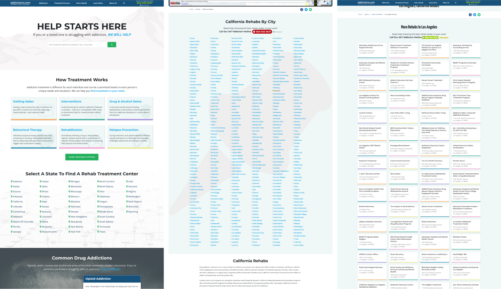{kind=link}
The Old Addictions Page Templates
- Home Page
- State Page
- City Page
HOW MIGHT WE
I began with the "How Might We" method. This ideation framework formulates quick steps to achieve successful executables. This method contains 3 phases: 1. Identity, 2. Understand, and 3. Execute. In short, this method ensures that a team recognizes, evaluates, and prioritizes problems and solutions. I formulated each problem into a question, which resulted in an executable solution for the team to delegate.
1. Identify
In this phase, I aimed to identify obvious UX pain points and issues with more complexity. After writing out many problems, the team and I voted on prioritizing 8 of the issues to move them along to the next phase. One of those issues included a high bounce rate on the State page template.

Example of High Value Item Difficult to Find
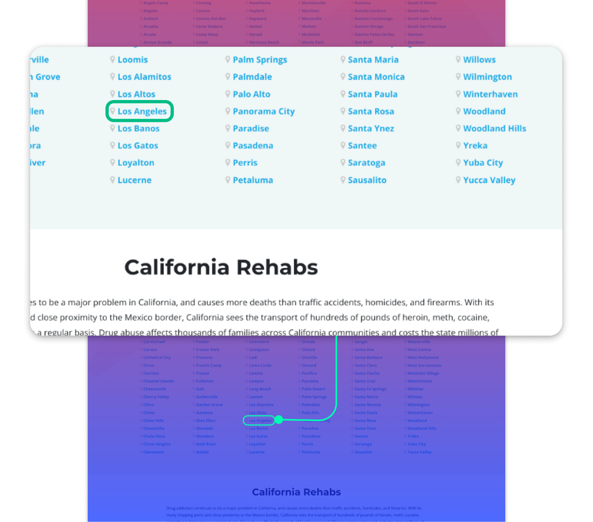{kind=link}
2. Understand
When we formulated these problems into questions using the HMW (How Might We) method, prioritizing goals became clear. The team started to understand the weight of these concerns. It allowed us to obtain realistic expectations for the items completed during Q1.


3. Execute (Deriving Solutions)
After voting on the items with reframed questions, we decided as a team to determine what would be executable during Q1 and Q2. When we voted, we agreed to complete the items below and then regroup to assess future projects in Q3.

Establishing a Design System
Design Tokens, Scale, and Stacking
I started by creating a design system to support the new brand. I first selected primary and secondary brand colors to represent the new theme. Then I used SCSS functions to derive dark and light variations of the primary colors and translated them into design tokens. I implemented a typography token called type.block in order to divide up 1rem (16px) into 4px blocks for precision. It allowed us to define the responsive typography for different screen sizes.
The design system also established predefined margins and scale for all elements. I created instructions for component stacking to quickly build modules or blocks of content utilizing order for text elements such as paragraphs and buttons.
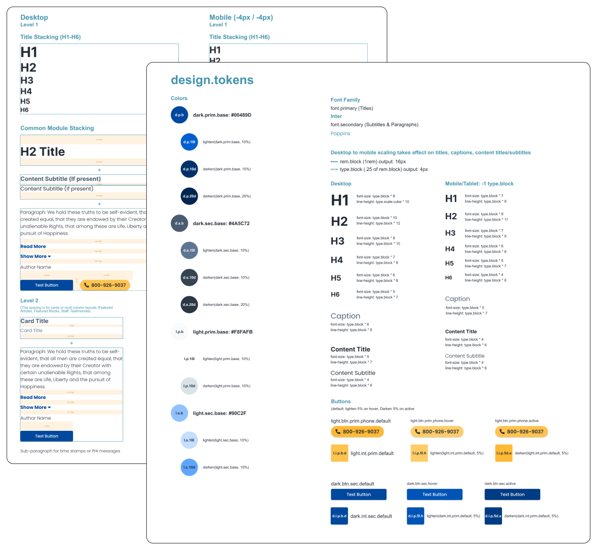{kind=link}
Color Logic and ADA Compliance
I then created color logic and mapping to separate dark and light colors. I achieved ADA compliance by classifying Section Background Colors (SBCs) and Interactive colors (ICs) within a module. The diagram below shows the relationship between those color groups. In other words, the diagram instructs that dark text (elements with D0) cannot coincide with a module containing a dark section background color. That would result in conflicting logic and poor contrast for the user.
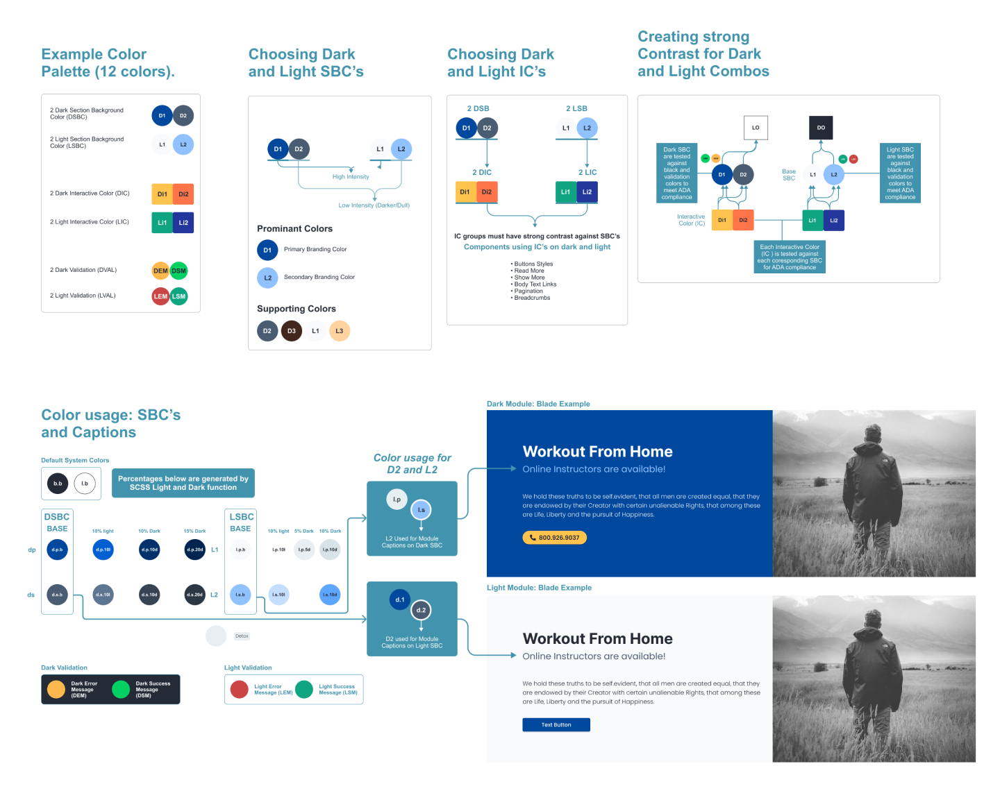{kind=link}
User Flows and CRO FUNNELS
I created a diagram to indicate the user flows and page types for various scenarios to determine search types. The diagram instructs the developers to differentiate keyword search results against location results (state/city). I ensured each of these result types carried CRO opportunities. The rehab listings were still being updated and continue to be updated. We prioritized call opportunities for visitors that could not find rehabs within 25-50 miles.
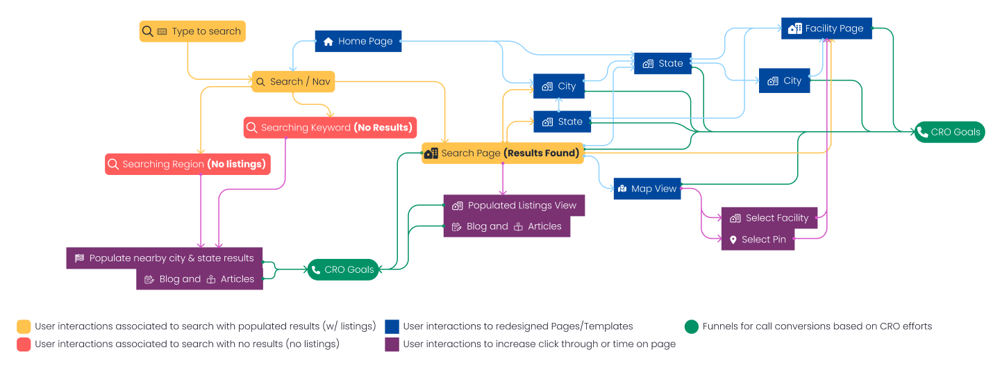{kind=link}
Wireframing State Page
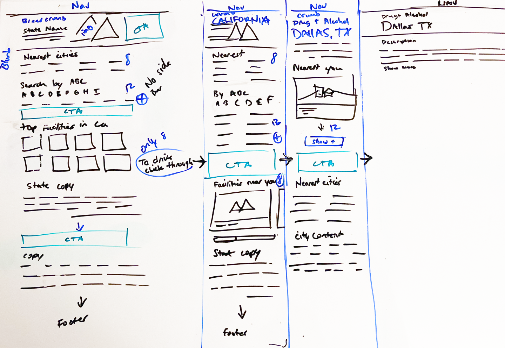{kind=link}
Page Templates for Redesign
- Home Page: Improve SEO and market credibility
- State Page: CRO, UX, listings
- City Page: CRO, UX, listings
- Facility Page: CRO, UX, facility, and categories
Home Page Redesign
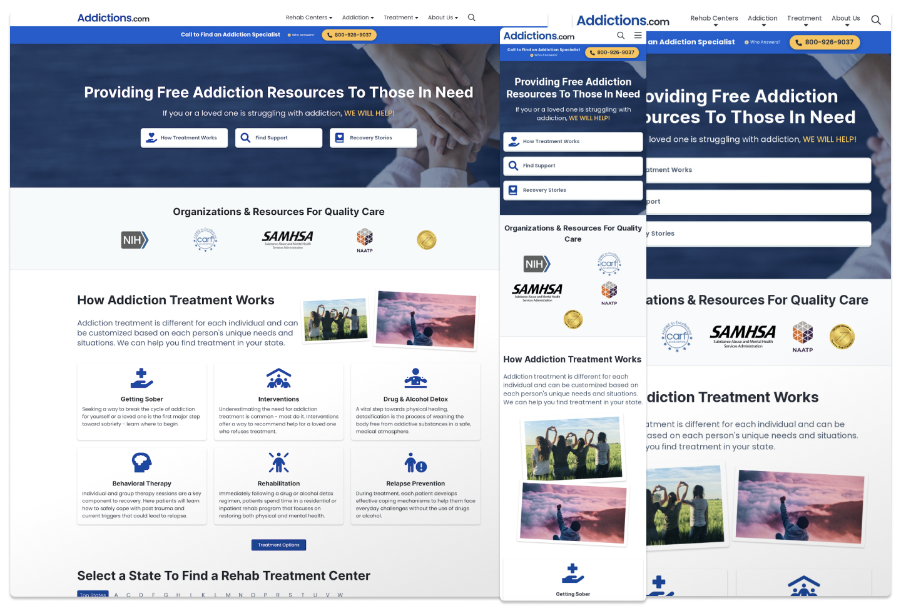{kind=link}
State Page Redesign
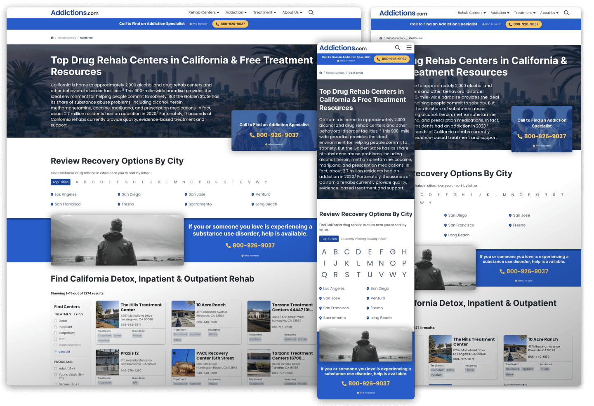{kind=link}
City Page Redesign
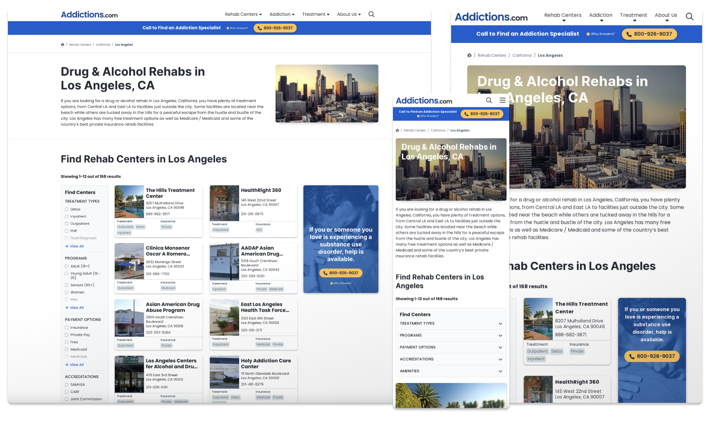{kind=link}
Facility Page Redesign
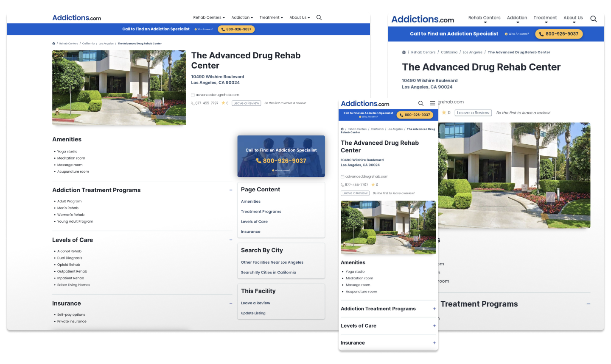{kind=link}
CRO / VWO
I established 9 CTAs for CRO and A/B testing opportunities. Since the previous templates from the older design did not have CTAs in effective locations, I ensured that the new page templates had CTAs above the fold and between large content blocks to break up the dense text.
Tests Types Conducted on VWO
- Multi-variation Testing
- Placement Testing
- Animation Testing
- Content/Messaging Testing
Boiler Plate CTAs
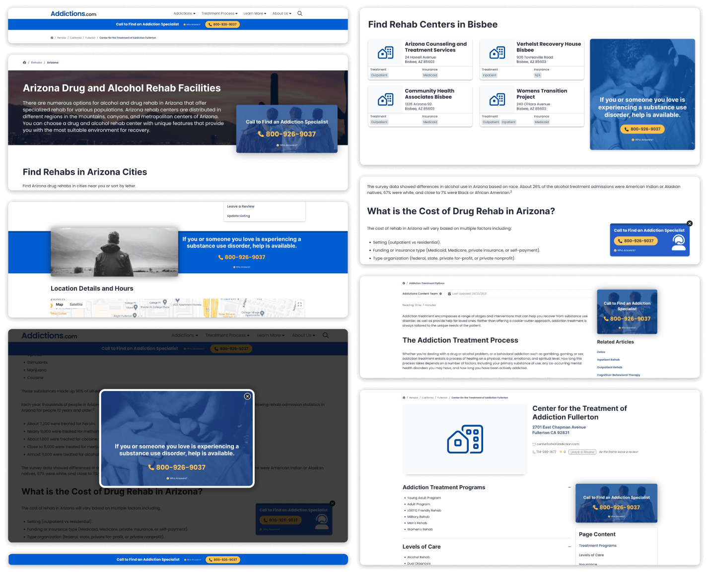{kind=link}
Column 1
- header-sticky-cta
- state-banner-cta
- in-content-fullwidth-cta
- modal-cta
- footer-header
Column 2
- listing-results-follow-cta
- floating-cta
- sidebar-article-cta
- sidebar-facility-cta
Shortcode Content enhancement
I designed a dynamic shortcode system to support data visualization and user engagement. This effort allowed the content team to highlight specific points of interest like statistics and graphs, which improved lists and blocks of content to become more enjoyable for the user. I also coded a copy-and-paste library for anyone involved to use shortcode types with modified attributes. These attributes allowed for customization like 2-4 column layouts.
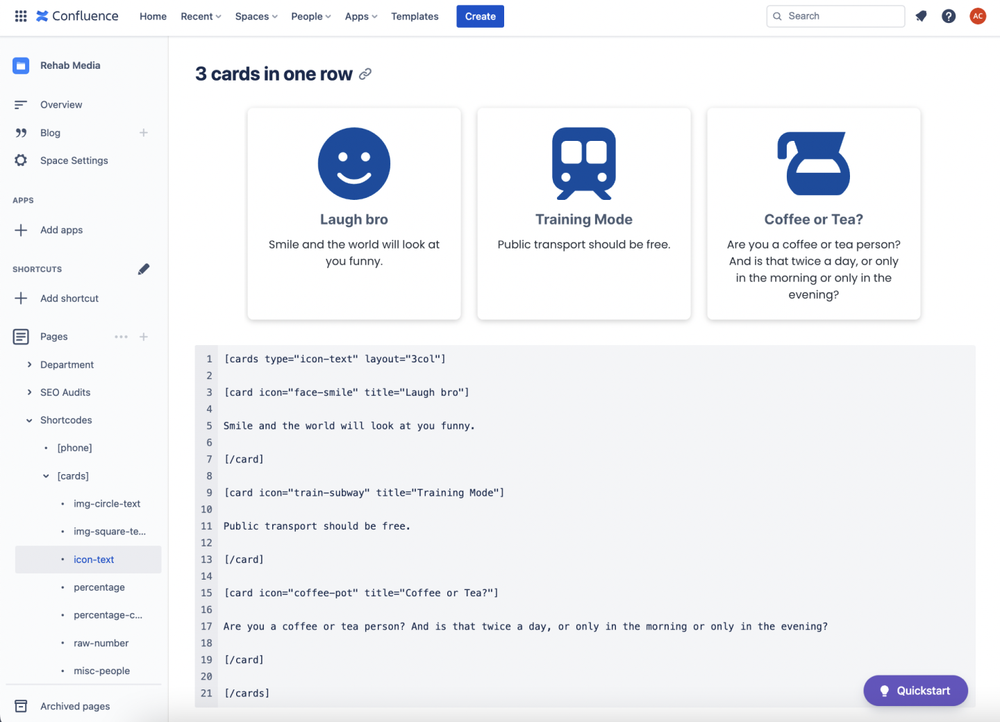{kind=link}
Shortcode Types:
- Images
- Lists
- Square Img Cards
- Percentage Img Cards
- Icon Cards
- Raw # Cards
- Medical City State Templates
Summary - Validating my work
In conclusion, this redesign set a foundation for fulfilling profitable business goals. Since the redesign aimed to improve mobile UX, we increased call lift by ensuring that CTAs were prominent in the mobile experience. The secondary objective fulfilled in this effort was to improve SEO ranking. Since the new site emphasized better information architecture and updated content placement, our SEO rankings and time-on-page improved.
- Calls Increase
- Improved UX
- Decreased rage clicks
- SEO ranking improved
- Traffic improved due to Content Strategy
- Time-on-page increased due to improved click-throughs.
- More engagement with content visualization